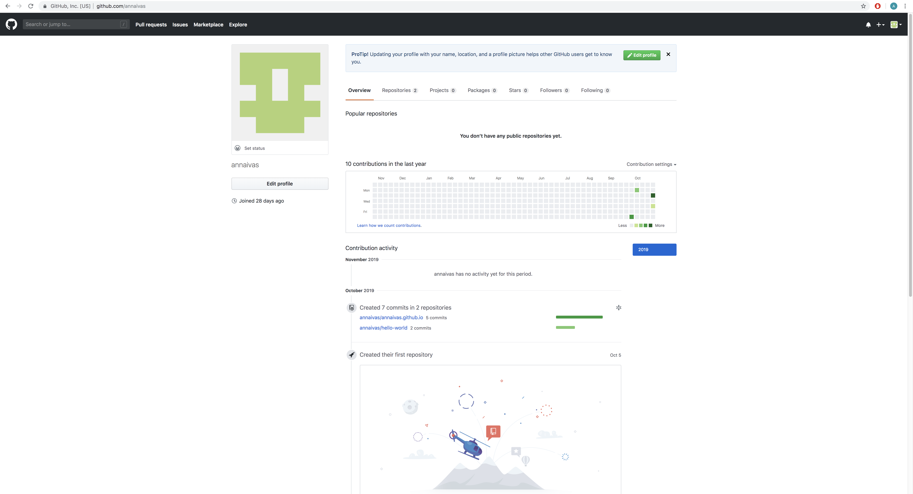
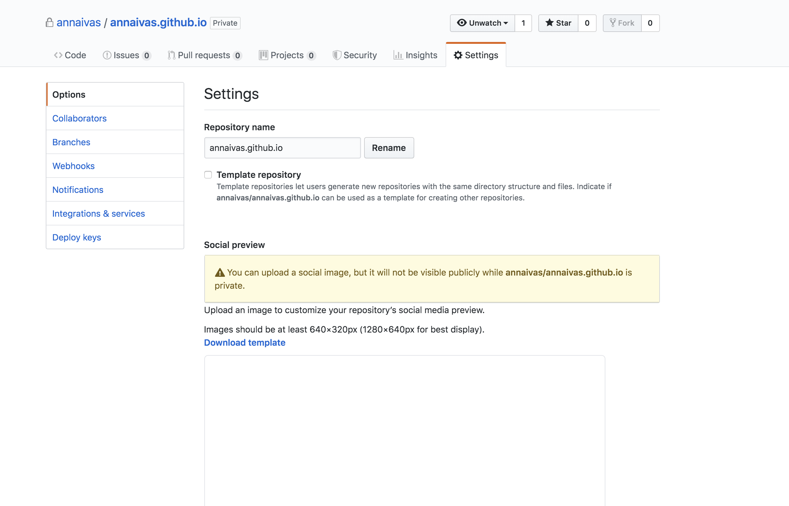
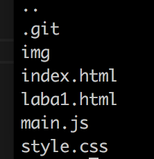
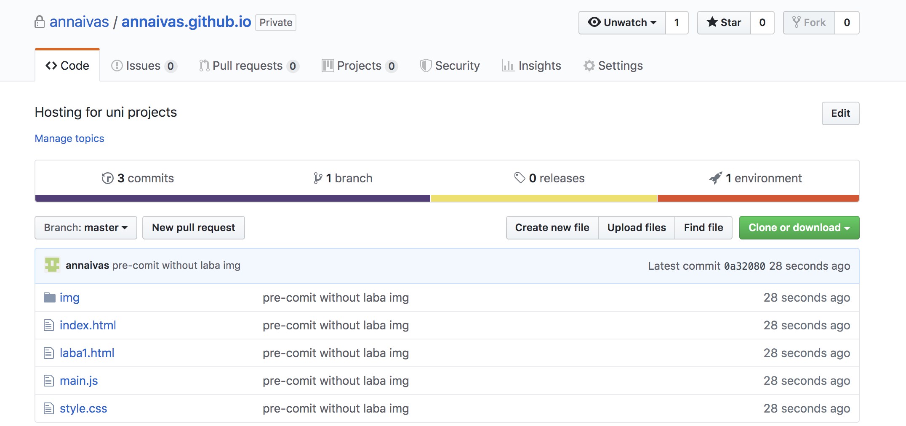
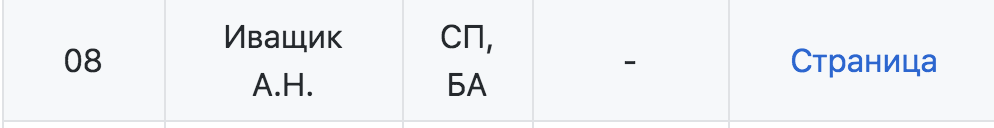

1) Регистрация на ГитХаб;
2) Добавиться в общий репозиторий inet-2019;
3) Создать страницу-отчет;
1) Пройдена регистрация и создана страница (ссылка);

2) Этапы создания страницы-отчета:
а) создание репозитория annaivas.github.io;

б) создание на компьютере отдельной папки под проект и клонирование туда репозитория.
В данном случае можно воспользоваться либо командами git clone (склонировать пустой репозиторий), либо уже в существующем связать проект с гитхабом с помощью git init и git remote.
Я использовала второй вариант;

в) Разработка страницы-отчета. Был выбран дизайн в стиле parallax (для его создания потребовалось написать Javascript),
также скрипт использован для создания эффекта печатающегося текста. Помимо этого в работе использованы технологии html и Css;
г) В ходе написания было совершенно несколько коммитов (с помощью команд git add, git commit и git push);

д) В репозитории доступен код с комментариями;
3) Ссылка на отчет добавлена на общую вики-страницу;

(c) Иващик Анна, 2019